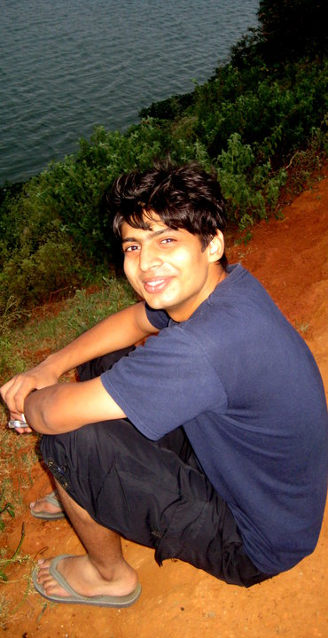
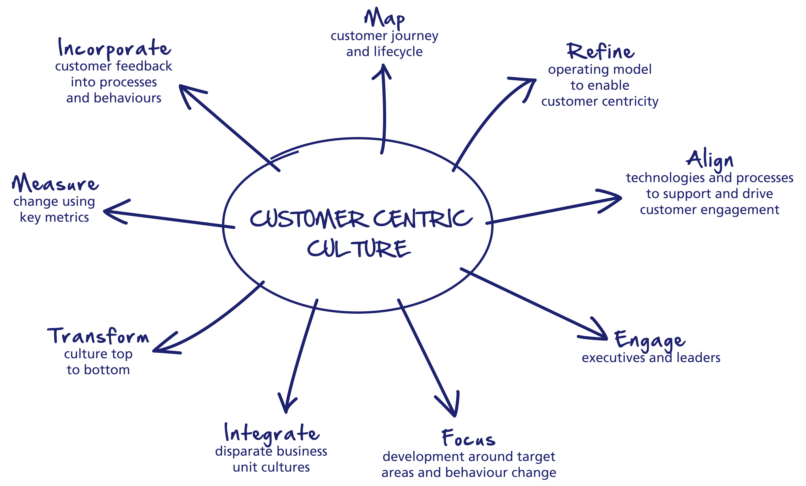

Vaibhav Agarwal
A developer, thinker, designer, student... for life
Vaibhav is a person who works with adrenaline rush. He believes in breaking boundaries and pushing his limits to get his dreams realized. He strongly follows the principle of making Earth a better place to live and is passionate about analyzing and simplifying everything he finds difficult, to make somebody else's life easier.
Vaibhav came to US with a blast stopping in four magnificient cities across three countries on the same 37 hour long first day of the year 2012 and was absolutely mesmerized by the first snowfall of his lifetime.



In a team of four, I covered the storyboarding, paper prototyping, balsamiq wireframing and coding the HTML, CSS and JS part. Most importantly, I was responsible for requirement gathering from target audience and Usability Testing
Aster Lens is a new interactive Web application for Aster 5.10. It allows Users to find, view, and share results from their respective platform functions. It's a quantum leap forward compared to the old way of visualizing where the answer set would provide you with a URL that you have to Copy/Paste into a Web browser.
Performed usability study with non development users on the application, analyzed experiences and implemented changes to rectify the shortcomings. Constant coordination with the development team for fixing urgent issues for the launch. Committed several usability code enhancements at crunch time.
Market Analysis, interview users and understand what is expected out of future App Discovery Platform were also included in my job role during the internship. Presented my ideas and concerns to the VP and dev team manager for changing application architecture and incorporating several user requirements
A card games based on the concept of a Marathon race, where an athlete has to cross all the milestones and reach the finishing line before the rest. Its a turn based 2 player game with objective to arrange cards in a specific sequence to complete a milestone. Player finishing all the milestones first wins.
Made several iterations of the emotion and game rules to nail it down. During the process, broke perseverance to emotion with hope, annoyance, competition, collaboration, shadenfreude and passion.
Performed usability study with non development users on the application, analyzed experiences and implemented changes to rectify the shortcomings. Constant coordination with the development team for fixing urgent issues for the launch. Committed several usability code enhancements at crunch time.
Market Analysis, interview users and understand what is expected out of future App Discovery Platform were also included in my job role during the internship. Presented my ideas and concerns to the VP and dev team manager for changing application architecture and incorporating several user requirements.
An internal social network open to more than 2 million people of the organization with purpose to provide a platform and enable fun way for knowledge sharing within the organization. It is a basic tool for beginners to search for information for his domain and a platform for the experienced to touchbase with the changing technologies and pass on their own experience to their peers.
As a part of my job role I optimised database, along with a colleague fine tuned Solr based rankings and iterated over them, introduced automated functional testing for UI, worked very closesly with graphic designer and revamped the jargon used, implemented layout and coloring scheme to increase users from both gender.
- Requirement Gathering
-
Talk to Client
 - Analyse Market

- Identify Target Audience
- Talk to some subset of target audience
-
Talk to Client
- User Research
- Create Personas
- Interview Users
- Conduct Field Research, Online Surveys, Questionnaire, Participant Observer Tests
- Storyboarding Scenarios
- Brainstorming and Prototyping
- Whiteboard Prototypes
- Paper Prototypes
- Wireframes
- Usability Testing
- Recruit Test Users
- Create Test Plan
- Identify goals
- List down features and scenarios to be tested
- Identify tasks to be performed
- Create Screener, Post-test Survey Questionnaire
- Record audio, video, user interaction and expressions